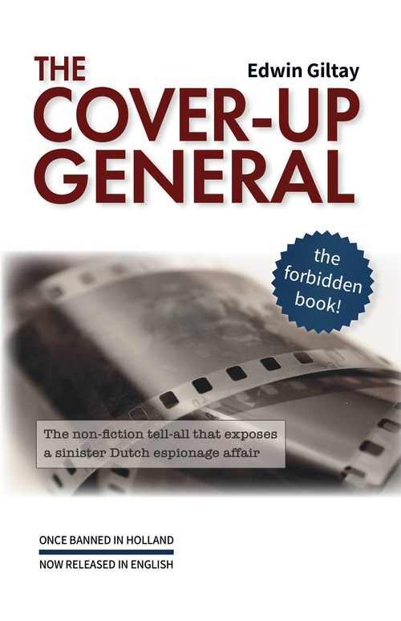

Le seul livre néerlandais à avoir surmonté une interdiction totale de publication :
Désormais téléchargeable gratuitement dans le monde entier
Des espions indiscrets, un général retors et des civils innocents : Le Général de dissimulation se lit comme un palpitant roman d’espionnage. Mais il constitue aussi un témoignage factuel de la manière dont une opération néerlandaise de dissimulation a échappé à tout contrôle. En jeu : des photos montrant des crimes de guerre à Srebrenica. Le livre a été interdit, mais cette interdiction a été annulée en appel. Tous ces développements sont exposés dans cette édition anglaise.
Téléchargez-la et partagez-la librement, en modeste hommage au combat contre la censure.

The Cover-up General
Auteur : Edwin Giltay Révision du texte anglais : Michael Wynne
La Haye, Pays-Bas, 2025
292 pages, avec illustrations en couleur
Titre néerlandais : De doofpotgeneraal
Titre français : Le Général de dissimulation
Pourquoi cette édition internationale est importante
Cette affaire n’est pas un chapitre clos. Relayée par des médias du monde entier, elle touche au cœur d’une démocratie qui fonctionne :
•
Pour l’histoire :
Les Mères de Srebrenica ont cité le livre dans leur procès contre l’État néerlandais, comme indice que la fameuse pellicule, qui montrait des crimes de guerre, n’avait jamais été ratée et que les photos sont occultées depuis lors. Dans cette affaire, la Cour suprême a jugé, sur d’autres fondements, que l’État est partiellement responsable de la mort d’environ 350 hommes.
•
Pour la liberté de la presse :
La Cour d’appel a rejeté les doutes sur la méticulosité de l’auteur. Ainsi, Le Général de dissimulation a créé un précédent rare à l’échelle mondiale : une interdiction totale du livre, annulée en appel.
•
Pour la responsabilité de l’État :
L’État tient des discours contradictoires. À la question de savoir si le livre relève de la fausse information ou de la théorie du complot, la réponse du ministère de la Justice a été, en substance, non : cette critique n’est « en aucune manière fondée » sur le contenu. La Défense l’a réduit à un livre où « les faits et la fiction se mêlent en effet ». La commission permanente de la Défense du Parlement a demandé à l’unanimité une réponse. Sur l’affaire du renseignement, cette réponse n’est jamais venue.
Ces 100 citations (également disponibles au format PDF) mettent en lumière les abus entourant une opération de renseignement où le secret se heurte à la transparence. Ces voix éclairent une lutte plus large pour que l’État rende des comptes et confrontent le ministère de la Défense à son rôle dans l’affaire, qui a culminé dans une victoire judiciaire contre une interdiction de publication et de parole
(voir le jugement de censure
ECLI:NL:RBDHA:2015:15050
et l’arrêt d’appel
ECLI:NL:GHDHA:2016:870). Cette affaire porte sur un seul aspect du dossier de Srebrenica : la fameuse pellicule.
Choisissez les citations clés ou toutes les citations. Filtrez aussi par intervenant, année ou pays de la source.
Psychiatrisation abusive
D’« inébranlable » à « complètement fou » : comment le ministère de la Défense réduit au silence les lanceurs d’alerte.
« Forte personnalité »
— drs. P. van der Pol, psychologue du ministère de la Défense, rejette Edwin Giltay lors d’un examen de sélection parce que son caractère est jugé trop fort pour être brisé par des sergents instructeurs (1998), une appréciation revue par la suite dans des documents officiels
— Frank de Grave, ministre de la Défense, au sujet d’Edwin Giltay, qui avait signalé des abus, dans une position officielle jamais rétractée, signée par son secrétaire général (1999), en contradiction directe avec l’appréciation antérieure d’un caractère fort
« Il sera simplement pris acte de vos lettres ultérieures sur le même sujet. »
— Reinier van Zutphen, Médiateur national, refuse de rétracter le rapport public du Médiateur de 1999 dans lequel la déclaration de folie de Giltay par De Grave a été reprise sans contestation, bien que Giltay ait produit de nombreux documents officiels réfutant les accusations
« La psychiatrisation abusive de ceux qui signalent des manquements est un phénomène récurrent. C’est une politique, et le ministre de la Défense ne fait rien pour y mettre fin. »
— Victor van Wulfen, pilote de chasse lui aussi faussement déclaré fou par le ministère de la Défense
« Je n’ai pas renvoyé mon plus haut fonctionnaire. Je n’ai pas remplacé l’équipe dirigeante. C’est un dilemme terrible. Même avec le recul, je ne sais pas si j’ai bien fait. »
— Frank de Grave, ancien ministre de la Défense, revient dans son autobiographie (2018) sur son secrétaire général, qui a signé en son nom la déclaration de folie de Giltay
« La Défense ne s’est jamais exprimée de la sorte au sujet de M. Giltay. »
— Ank Bijleveld, ministre de la Défense (2018), nie que la Défense ait jamais qualifié Giltay de « complètement fou », alors que cette caractérisation demeure aujourd’hui encore publiée comme position du ministre dans le rapport 1999/507 du Médiateur
Le déni de la réalité par le ministère de la Défense : qu’est-ce qui relève du factuel et qu’est-ce qui relève de la fiction ?
« Edwin Giltay aurait été licencié de chez [le câblo-opérateur et fournisseur d’accès] Casema au bout de trois jours, en raison d’un comportement irritant et inadapté. »
— Frank de Grave, ministre de la Défense, reprend dans sa position officielle (1999) une autre affirmation tirée uniquement de l’audition de Barbara Overduyn, agente du renseignement militaire ayant brièvement travaillé chez Casema
« Edwin Giltay a dûment accompli ses fonctions d’intérimaire du 8 juin au 23 juillet 1998. »
— Casema, attestation officielle (1999), en contradiction directe avec la position jamais rétractée du ministre De Grave, consignée dans le rapport 1999/507 du Médiateur national
« Edwin Giltay a travaillé pour nous comme télévendeur du 8 juin 1998 au 27 juillet 1998, à l’entière satisfaction du client. »
— l’agence d’intérim Randstad, recommandation (1999) sur le travail intérimaire de Giltay : Randstad était l’employeur jusqu’à la date de fin de contrat, ce qui rendait un licenciement par Casema juridiquement impossible, contredisant la position de De Grave
« [J’ai déclaré] que Giltay aurait été licencié de chez Casema en raison d’un comportement militant inadapté. [Cela a] depuis été réfuté par écrit par Giltay, preuves à l’appui. »
— Barbara Overduyn, ne conteste pas, après 17 ans, que Giltay a réfuté son allégation de licenciement, preuves à l’appui (2016)
« Votre lettre ne contient aucun élément ni fait nouveau sur la base duquel une rectification devrait être apportée ou des excuses vous être présentées. »
— Jeanine Hennis-Plasschaert, ministre de la Défense (2017), refuse de corriger la position officielle et s’en tient à des affirmations réfutées
« Dans le livre, les faits et la fiction se mêlent en effet. »
— Ank Bijleveld, ministre de la Défense (2018), continue d’ignorer qu’Overduyn n’a pas contesté la réfutation de ses affirmations, refuse de répondre sur le fond et accuse publiquement Giltay de malmener les faits
La pellicule « ratée » de Srebrenica : perdue dans un écheveau d’intrigues et de conflits internes.
« J’ai eu le privilège de lire le manuscrit de Giltay et il m’a fait dresser les cheveux sur la tête. “On ne t’en saura pas gré”, ai-je commenté, ajoutant : “Méfie-toi des représailles !” Je crains que l’on n’ait gravement menti en haut lieu à l’époque. »
« Dans Le Général de dissimulation, le conflit entre deux camps au sein du ministère néerlandais de la Défense occupe le devant de la scène. L’un des camps voulait détruire à tout prix la pellicule compromettante de Srebrenica montrant des crimes, tandis que l’autre voulait la rendre publique. »
— Radio-televizija Srbije, le radiodiffuseur public serbe
« Le livre Le Général de dissimulation cite une agente du MID qui, en 1998, s’est plainte de la culture de la dissimulation et a dit que la pellicule n’avait pas été ratée et que les photos sont occultées. »
— Marco Gerritsen et Simon van der Sluijs, avocats des Mères de Srebrenica, dans leur mémoire contre l’État néerlandais (2015), au sujet de Barbara Overduyn
« Chaque fois que des informations de l’État disparaissent, tout le monde s’écrie aussitôt : “Vous voyez, exactement comme cette pellicule.” Pourquoi l’État ne peut-il pas simplement faire preuve d’ouverture ? Il importe que cette énigme, elle aussi, soit résolue une fois pour toutes. »
— Brenno de Winter, journaliste d’investigation, appelle à la transparence après avoir reçu le premier exemplaire
« Il aurait mieux valu rendre la pellicule publique immédiatement, en faisant savoir qu’on ne pouvait pas l’arrêter. C’est une mascarade. »
— ancien porte-parole principal de la Défense, lors d’une conversation sur le livre et la pellicule, au domicile de Giltay et en présence d’un journaliste (2020)
« Bien plus important [que la pellicule] est le fax perdu contenant 239 noms d’hommes musulmans. »
— le professeur Joris Voorhoeve, ancien ministre de la Défense et professeur de relations internationales, dans une réaction au livre de Giltay, au sujet d’une autre preuve disparue sur Srebrenica, ce qui rend la défaillance plus grave encore
« Condamne le défendeur à s’abstenir de toute diffusion, publication et/ou réimpression ultérieure du livre [Le Général de dissimulation] […] et à s’abstenir de toute promotion ultérieure […] lors de conférences, de présentations de livres et d’autres prises de parole publiques. »
— le tribunal de La Haye (2015), réduit Giltay au silence cinq mois après que les Mères de Srebrenica ont invoqué le livre comme preuve contre l’État néerlandais
— Barbara Overduyn, dans un fax qui prouve de manière irréfutable qu’elle variait l’orthographe de son propre nom (1999) ; plus tard, elle a soutenu que Giltay, qui avait repris l’orthographe du MID, avait « mal orthographié » son nom, ce que la juge a retenu comme l’un des motifs de l’interdiction totale du livre
« Netherlands: Court bans book on Srebrenica genocide »
— Mapping Media Freedom, alors la plateforme de signalement d’Index on Censorship, de la Fédération européenne des journalistes et de Reporters sans frontières, enregistre l’interdiction sous ce titre comme violation vérifiée de la liberté de la presse
« Le tribunal néerlandais lui a explicitement interdit de vendre et de promouvoir son livre ou de communiquer avec les médias, ce qui est sans précédent dans l’histoire récente du pays des tulipes. »
— Dnevni avaz, quotidien bosnien, au sujet de l’interdiction faite à Giltay (sous peine d’une astreinte de 1 000€ par jour, jusqu’à 100 000€)
« L’effet dissuasif qui en résulte est que les auteurs n’osent plus publier, de crainte qu’un seul passage puisse conduire à une décision interdisant un livre entier. Giltay a même dû mettre hors ligne l’intégralité de son site web. »
— Boekx Advocaten, dans l’appel de Giltay contre l’interdiction
L’interdiction levée : la Cour ne voit aucune raison de douter de la méticulosité de Giltay.
« À l’été 1998, alors que je travaillais chez Casema, Barbara Overduin m’a ordonné de cesser de voir Edwin Giltay. Son passé était si mauvais, selon Overduin, qu’il n’oserait pas m’en parler. »
— collègue chez Casema et ami de Giltay (1999), témoigne qu’Overduyn a semé le doute sur le passé de ce dernier, un procédé présentant les caractéristiques d’une mesure de déstabilisation
« Je vous accorde, à votre demande, une démission honorable avec effet au 1er janvier 1998. »
— Henk van Hoof, secrétaire d’État à la Défense, libère Barbara Overduyn, qui avait infiltré Casema en juin 1998, de ses fonctions le 3 novembre 1998, rétroactivement au 1er janvier 1998, semblant ainsi, d’un trait de plume, se laver les mains de l’opération
« Assistant department Intell MIVD, Department of Defence: mai 1995 – décembre 1998 »
— Barbara Overduyn, sur son profil LinkedIn (un profil commémoratif depuis son décès en 2024), où elle se présentait ouvertement comme collaboratrice de ce qui était, de fait, le département d’espionnage du MID / MIVD
« J’étais présent au procès. La dame du MID n’a pas fourni la moindre preuve à l’appui de son affirmation selon laquelle ce que Giltay écrit à son sujet serait inventé. »
« Contrairement au juge des référés, la Cour d’appel estime que ces inexactitudes ne suffisent pas non plus à jeter le doute sur la méticulosité avec laquelle Giltay a procédé à la rédaction du livre. […] Rejette l’interdiction demandée. »
— la Cour d’appel de La Haye, lève à la fois l’interdiction du livre et l’interdiction de parole : un arrêt unique (2016)
« Dit pour droit que l’État a agi de manière illicite […] en […] facilitant la séparation des [environ 350] réfugiés de sexe masculin par les Serbes de Bosnie »
— la Cour d’appel de La Haye, tient l’État pour responsable à hauteur de 30% dans l’affaire des Mères (2017) ; le livre a servi de preuve dans le mémoire
La politique s’en mêle : la commission permanente de la Défense demande à l’unanimité au ministre de réagir.
« La réalité se révèle à nouveau plus étrange que la plus folle des théories du complot. Le livre prouve que vraiment tout est possible, même aux Pays-Bas, y compris les menaces. »
— Willem Middelkoop, auteur à succès international et journaliste, au sujet des mesures de déstabilisation exposées dans le livre, telle l’intimidation psychologique par les services de renseignement
« Conseil de lecture ! Le livre sur le déploiement d’agents secrets et la pellicule du Dutchbat III a d’abord été interdit par le tribunal, mais il est désormais autorisé, si bien que chacun peut lire ce qui se passe aux Pays-Bas. »
— l’Association Dutchbat III, l’organisation des anciens combattants néerlandais qui étaient présents à Srebrenica
« Est-ce du Kafka ? J’aimerais que tout le dossier Srebrenica s’ouvre un jour. Si l’État faisait alors aussi preuve d’ouverture à propos de cette histoire, ce serait un beau bénéfice annexe. »
— Hans Laroes, ancien rédacteur en chef de NOS Journaal (journal télévisé public néerlandais), dans sa postface au livre
« M. Giltay a écrit un livre impressionnant sur ses expériences. De nombreux députés partagent mon avis : la ministre de la Défense lui doit une véritable réponse. »
— Sadet Karabulut, députée (2017), avant la décision unanime de la commission permanente de la Défense de demander une réaction à la ministre
« À la demande de Sa Majesté la Reine, je vous informe que la Reine a reçu votre lettre du 14 octobre et l’a remise pour examen entre les mains du ministre de l’Intérieur et des Relations au sein du Royaume. »
— le Cabinet de la Reine (31 octobre 2000), donne suite à la démarche de Giltay auprès de la cheffe de l’État, un jour après que De Grave a tenté de le réduire au silence
« La première plainte a été déclarée non fondée à la suite d’une enquête de la commission de contrôle des services de renseignement et de sécurité. »
— Jeanine Hennis-Plasschaert, ministre de la Défense, rejette la demande de réhabilitation de Giltay (2017), en invoquant une prétendue enquête de la CTIVD et un rapport du Médiateur démenti en 2016 par la Cour d’appel de La Haye
« La commission de contrôle CTIVD n’a traité aucune plainte de votre part contre le MIVD. Il n’existe donc pas non plus de rapport de la CTIVD. »
— le général Onno Eichelsheim, directeur du MIVD et aujourd’hui chef d’état-major des armées, dément l’existence de l’enquête de la CTIVD derrière laquelle se cache sa ministre (2017)
« Ce livre se caractérise par son style agréable à lire. […] Le NIOD a jugé improbable la théorie au sujet de la pellicule, et ce que l’auteur entend par “psychiatriser” n’est pas clair. »
— le Dr Klaas Dijkhoff, ministre de la Défense, critique le livre dans une lettre au Parlement (2017), alors que la Cour d’appel de La Haye n’avait justement pas mis en doute la méticulosité de l’auteur
« Les classifications [propagande, fausses informations, théories du complot] ne sont en aucune manière fondées sur le contenu du livre. Le terme “dangereux pour l’État” ne s’applique pas. »
— le Dr Ferdinand Grapperhaus, ministre de la Justice (2021), dans deux confirmations issues d’une même lettre, qui reviennent en substance à dire que la critique ne s’applique pas au Général de dissimulation
Alors que le gouvernement ne parle pas d’une seule voix, le livre se lit comme un pur suspense.
« Cela évoque l’atmosphère du célèbre Notre agent à La Havane de Graham Greene. Mais transposé à Delft, dans les bureaux d’un fournisseur d’accès à Internet… »
— le Dr Christ Klep, historien militaire et auteur de Somalië, Rwanda, Srebrenica, compare le livre de Giltay à un classique de l’espionnage
« Je lis Le Général de dissimulation d’Edwin Giltay en retenant mon souffle. On dirait de la fiction, tant c’est étrangement captivant et inquiétant à la fois. »
— Dr Lenneke Sprik, enseignante en sécurité internationale et spécialiste des opérations de maintien de la paix de l’ONU
« Travail intérimaire, chefs maladroits, contrôles défaillants, avec en prime les services de renseignement du pays : voilà les ingrédients de ce thriller true crime. »
— Nieuwe Revu, hebdomadaire d’opinion néerlandais, dans une critique quatre étoiles
« Les espions ont apparemment l’habitude de prendre des libertés avec la réalité et de l’arranger. »
— le colonel en retraite Charlef Brantz, ancien commandant par intérim de secteur de l’ONU supervisant le Dutchbat III, au sujet de l’obstruction faite à Giltay par Barbara Overduyn
« Un ancien employé de Casema révèle des activités d’espionnage menées par le service de renseignement militaire afin d’étouffer des preuves de crimes de guerre dans l’ex-Yougoslavie. »
— la Bibliothèque royale, bibliothèque nationale néerlandaise, notice de catalogue du Général de dissimulation classant le livre comme non-fiction
Du professeur à la presse : les éloges pour un récit méticuleux d’une affaire d’une gravité extrême.
« Écrit avec minutie et bien documenté. »
— le professeur Jan Pronk, ancien ministre de la Coopération au développement et diplomate de l’ONU, qui a assumé la responsabilité politique de l’échec de la mission onusienne néerlandaise à Srebrenica, recommandait déjà le livre avant sa publication
« Il ne fait aucun doute que Le Général de dissimulation constitue une base importante pour la documentation du génocide en Bosnie. »
— le professeur Mohamed Alsiadi, spécialiste du génocide et des droits humains à l’université Rutgers, aux États-Unis, perçoit la valeur des révélations néerlandaises sur Srebrenica (2025)
« Le livre se lit comme un roman à clef captivant et très détaillé, dans lequel les vrais noms sont révélés. »
— Checkpoint, le mensuel des anciens combattants publié avec le soutien du ministère de la Défense, chronique le livre et organise un tirage au sort pour ses lecteurs, alors même que le ministère refuse de se pencher sur les accusations
« À recommander à tous ceux qui veulent jeter un coup d’œil dans les coulisses de l’espionnage d’État en pratique et découvrir les dangers qu’il comporte pour toutes les personnes concernées. »
— NBD Biblion, dans une critique pour les bibliothèques néerlandaises, après quoi des bibliothèques publiques de tout le pays acquièrent le livre
« Tout un monde nouveau s’ouvre à moi ! Le livre m’a fait réfléchir : qui est mon général de dissimulation, ou devrais-je dire “secrétaire général de dissimulation” ? »
— Roelie Post, lanceuse d’alerte à la Commission européenne, reconnaît le même schéma de dissimulation à l’échelon de l’UE
« Srebrenica suscite encore la controverse aujourd’hui. Un livre néerlandais interdit il y a 10 ans éclaire d’autres dimensions de l’affaire. Quelle est son histoire ? »
— Al Jazeera Documentary, avec un carrousel photo sur l’affaire d’espionnage, les photos disparues et l’interdiction du livre annulée en appel (2025)
Comment l’histoire de Giltay résonne dans le monde entier, de Sarajevo à La Haye.
« Tiens, je t’offre une fleur de Srebrenica. »
— Munira Subašić, présidente des Mères de Srebrenica, survivante emblématique et militante pour la justice, remet à l’auteur Edwin Giltay une rosette commémorative du génocide (2017)
🇧🇦 Source :dedoofpotgeneraal.nl/doc/subasic.pdf (conversation personnelle avec Subašić au Palais de justice de La Haye, le 27 juin 2017, traduite par la journaliste Naida Ribić)
« Je veux lire Le Général de dissimulation en anglais. »
— Ćamil Duraković, survivant du génocide de Srebrenica et vice-président de la Republika Srpska de 2022 à 2026, demande une traduction après la commémoration de Srebrenica en 2017, d’où l’édition anglaise gratuite dans le monde entier
« Merci beaucoup. J’aimerais voir une traduction bosnienne. »
— Mirsada Čolaković, ambassadrice de Bosnie-Herzégovine, demande personnellement une traduction bosnienne du livre pour son pays lors d’une rencontre à son ambassade à La Haye (2018)
« Edwin Giltay s’est retrouvé au centre d’un scandale dans lequel le service de renseignement militaire a cherché à dissimuler l’existence de photographies, et y est en partie parvenu. Parce que l’“affaire” a été révélée, le livre a été interdit, et Giltay a été pris pour cible par les services de renseignement. »
— Al Jazeera Balkans, dans un long entretien (2018)
« Giltay répond aussi à la question : qui est le général qui maintient le couvercle sur cette dissimulation ? Compte tenu des procès et enquêtes en cours dans le sillage du drame de Srebrenica, ce livre est sans nul doute d’actualité. »
— Onafhankelijke Defensiebond, syndicat militaire néerlandais, soutient le livre tandis que la Défense garde le silence
« Je te félicite et tiens à te remercier d’avoir écrit et publié ton livre important. »
— Hasan Nuhanović, survivant du génocide de Srebrenica, où il a perdu ses parents et son frère, et auteur d’Under the UN Flag, félicite Giltay d’avoir publié son livre en anglais (2025)
Du coffre-fort secret au triomphe répété : comment le Médiateur a été rappelé à l’ordre.
« Il s’agit d’un dossier secret dans le coffre-fort. Si nous devions communiquer davantage d’informations, il nous faudrait, à mon avis, demander sa position au ministère de la Défense. »
— le Médiateur national, dans une note interne révélant à la fois le statut secret du dossier de Giltay et le droit de regard du ministère de la Défense sur toute divulgation
« La décision contestée est ainsi manifestement illégale. [Le Médiateur national] devra encore statuer sur la demande Woo [loi sur l’accès public à l’information]. »
— le tribunal de La Haye, statue en faveur de Giltay dans sa bataille juridique contre l’obstruction de l’État à une demande de documents administratifs (2023)
« Déclare fondé le recours contre l’absence de décision rendue dans les délais sur la demande »
— le tribunal de La Haye, impose une astreinte de 100€ par jour lors de la deuxième victoire consécutive de Giltay sur le Médiateur national (2023), la même institution qui laisse en ligne, sans révision, son rapport discrédité de 1999
« Astreinte pour retard | décision Woo | 19 jours à 100,00€ soit
1 900,00€ »
— ING Bank, relevé (2024) confirmant le versement de l’astreinte par le Médiateur national à Giltay, résultat tangible de la décision du tribunal sur le retard
« J’ai lu Le Général de dissimulation en entier avec grand plaisir pendant mon congé de Noël. Mes compliments pour la documentation sous-jacente très étendue et le niveau de détail du récit ! »
— Karin Vaalburg, conseillère juridique principale auprès du Médiateur national, salue la documentation du livre dans un échange de courriels (2024), tout en annulant une réunion prévue
« Le Général de dissimulation est un exemple très rare, dans notre collection, d’un auteur ayant contesté avec succès l’interdiction d’un livre. »
— le Banned Books Museum de Tallinn, lors du lancement de la traduction anglaise sous forme de PDF international gratuit (2024), financé par les astreintes versées par le Médiateur national
Du vétéran de Srebrenica aux médias internationaux : des voix qui rendent intenable le silence ministériel.
« Tout à fait exact »
— Ank Bijleveld, ministre de la Défense, donne raison à Giltay sur Twitter au sujet d’un terme militaire (2018), sans pour autant rétracter la qualification de 1999
« [Que] le livre ait eu un impact sur la société, ait suscité la discussion et ait joué un rôle dans la procédure qui a abouti à l’arrêt de la Cour suprême »
— la Seconde Chambre néerlandaise (2026), reconnaît par l’intermédiaire du service des affaires juridiques le rôle du livre dans l’affaire des Mères, en rejetant la demande Woo de Giltay
« Les documents révélant les frais juridiques [plus de 2,6 millions d’euros dans les affaires de Srebrenica] ont été publiés à la suite d’une demande d’information du journaliste Edwin Giltay, qui a écrit un livre sur la manière dont l’État néerlandais a tenté de dissimuler des informations concernant son rôle à Srebrenica. »
— Balkan Insight, portail d’actualités des Balkans en anglais
— Ank Bijleveld, ministre de la Défense (2018), en réponse aux questions des médias au sujet de l’arrêt de la Cour d’appel de La Haye, qui a levé l’interdiction du livre et n’a pas mis en doute la méticulosité de l’auteur
— la juge Solomy Balungi Bossa de la Cour pénale internationale, invitée d’honneur lors d’un débat public, en réponse à la question de l’auteur sur ce qu’elle pense de ceux qui dissimulent des preuves de crimes de guerre (2026)
Étoiles et éloges : comment la critique apprécie ce récit révélateur.
★★★★★
« Il est presque suffocant de lire comment les services de renseignement se liguent pour empoisonner la vie de citoyens innocents. Une telle chape de plomb doit être levée. »
— Boekje Pienter, guide de lecture militaire, dans une critique cinq étoiles
« Dissimulations, censure et l’ombre d’un génocide peut-être évitable […]. Les ingrédients d’un thriller sont tous réunis, à ceci près que l’auteur, Edwin Giltay, n’a rien eu à inventer. »
« De hauts responsables tentent de se disculper, mais sont cloués au pilori par leur propre maladresse. Si l’affaire n’était pas d’une gravité extrême, le lecteur pourrait y voir une plaisanterie magistrale. Le premier groupe scout venu s’y prendrait sans doute mieux. »
★★★★★
« Edwin Giltay décrit à quel point nos services de renseignement dysfonctionnent, couverts par la Défense et le Médiateur national, avec des ministres éclaboussés dans leur sillage. Ne pas avoir reçu de données exactes ne les dispense pas du devoir de chercher sérieusement la vérité. »
— Hebban, la plus grande communauté de lecteurs des Pays-Bas
« On croirait à une mauvaise blague, mais c’est bel et bien arrivé. […] Dans un style sobre et avec le sens du détail, Edwin Giltay décrit dans Le Général de dissimulation les manœuvres maladroites de deux espions aux manières laissant à désirer dont il a été témoin. »
— Haarlems Weekblad, hebdomadaire néerlandais, s’étonne de la véritable histoire
« Comme si le service de renseignement militaire n’avait pas déjà ruiné sa propre réputation avec tous ces mensonges et faux-fuyants autour, par exemple, de la pellicule photo. Au lieu d’enfin faire toute la transparence sur ce qui s’est passé là-bas à l’époque, on s’agite autour d’un livre. »
— Thrillerlezersblog, blog littéraire néerlandais, dénonce les priorités inversées
Des journalistes, des spécialistes, un ancien homme politique et un chatbot reconnaissent le schéma.
« Edwin Giltay est un simple citoyen, mais il s’est pourtant retrouvé indirectement mêlé au scandale. Cela ne l’a plus lâché et il en a tiré le livre Le Général de dissimulation. »
— EenVandaag, magazine d’actualité de l’audiovisuel public néerlandais
« Et pourtant, le plus admirable chez toi, c’est que tu n’as pas abandonné. Cela te rend courageux. »
— Philip Dröge, auteur à succès et journaliste d’investigation, à la réception de la deuxième édition révisée (2016), sur la persévérance de Giltay, ce qui est cruel au regard de l’interdiction de parler de ses propres expériences
« Il serait bon qu’une instance externe et indépendante passe au crible TOUTES les enquêtes internes dites “maison” menées par la Défense ; pour des lanceurs d’alerte comme @victorvanwulfen @fredspijkers @edwingiltay, aucune enquête sérieuse n’a été menée #doofpot »
— Jan Born, journaliste d’investigation, plaide sur Twitter pour une enquête indépendante
« C’est un livre important sur une affaire importante, dans laquelle le service secret tente d’escamoter des preuves de crimes de guerre aux dépens d’un citoyen quelconque, mais étonnamment attentif. »
— Roel van Duijn, homme politique lui-même suivi pendant des décennies par les services de renseignement
« Victoire impressionnante contre la censure : faire annuler l’interdiction totale d’un livre en dit long sur ta détermination. Les défaillances de Srebrenica méritent un examen qui aille au-delà des rapports lissés. »
— Grok, le chatbot de xAI, salue sur X la victoire remportée contre la censure : selon Grok lui-même, la première fois que xAI soutient publiquement un livre (2025)
De l’élite bancaire au Parlement européen : l’affaire trouve un écho jusqu’à Bruxelles.
« J’ai acheté et lu le livre. Vraiment scandaleux, cet appareil d’État qui détourne le regard. Indigne de notre pays. Je suis également impressionné par ton historiographie rigoureuse. »
— le baron Rik van Slingelandt, ancien dirigeant d’ABNAMRO (2024)
🇳🇱 Source : courriel personnel à l’auteur, 23 août 2024 (citation approuvée)
« Sur la pellicule ratée de Srebrenica et sur l’écheveau d’intrigues et d’écrans de fumée entourant la disparition de cette possible preuve de crimes de guerre, Edwin Giltay a écrit en 2014 Le Général de dissimulation. »
— de Volkskrant, quotidien néerlandais, relie le livre au génocide de 1995 pendant la guerre de Bosnie
« En tant que groupe, nous avons décidé de ne pas soutenir Reinier van Zutphen comme candidat. […] J’apprécie sincèrement votre engagement sur cette question. »
— Anders Vistisen, eurodéputé danois et chief whip du groupe Patriotes pour l’Europe (2024), à propos de l’élection du Médiateur européen, après réception du livre ; Van Zutphen, l’un des six candidats, a perdu
« Je partage votre préoccupation quant à la transparence et à l’intégrité dans la fonction de Médiateur européen. »
— Moritz Körner, eurodéputé libéral allemand, après réception du Général de dissimulation, s’engage à tenir compte des exemples de Giltay dans le processus de sélection et à les verser au débat (2024)
« Edwin Giltay décrit comment ses droits ont été sacrifiés par l’État pour maintenir la chape de plomb sur la pellicule de Srebrenica. Une fois de plus, cela nourrit le soupçon que l’État est responsable d’avoir fait disparaître la fameuse pellicule. »
— Marco Gerritsen et Simon van der Sluijs, avocats des Mères de Srebrenica
Comment l’interdiction n’a fait que rendre le livre plus désirable.
« Certainement, mais seulement contre un gage sérieux. Ce livre est interdit et a donc acquis une valeur inestimable. »
— Harry van Bommel, député, répond sur Twitter, une semaine après l’interdiction totale, à la question de savoir si le livre interdit peut être emprunté à la bibliothèque de son parti (21 décembre 2015)
« Le Général de dissimulation peut de nouveau être vendu, a décidé aujourd’hui la Cour d’appel de La Haye. Le livre traite de la pellicule mal développée qui contiendrait des images de musulmans bosniaques tués à Srebrenica. »
— le professeur Maarten van Rossem, historien, annonce la libération du livre le jour de l’arrêt (12 avril 2016)
« Il est inconcevable qu’un livre très fouillé et documenté soit interdit. De plus, Giltay avait envoyé son manuscrit au préalable au ministre de la Défense, qui n’y avait vu aucune objection. »
— Caspar ten Dam, analyste des conflits et expert de Srebrenica
« Tous les exemplaires du livre doivent être rassemblés et brûlés ou détruits. »
— Burco Online, journal local du Somaliland, appelle à la destruction de livres, dont Le Général de dissimulation et Les Versets sataniques de Salman Rushdie
« J’ai encore pu le dégoter chez Athenaeum quand il était encore interdit. »
— Bojan Breljaković, podcasteur, achète le livre dans cette librairie d’Amsterdam, illustrant ainsi la détermination des lecteurs à cueillir le fruit défendu
« Le Général de dissimulation a été interdit aux Pays-Bas par décision de justice. Giltay a nié avoir fourni de fausses informations et, en 2016, l’interdiction a été levée par la Cour d’appel de La Haye. »
— Koran Sindo, quotidien indonésien, dans un panorama des livres interdits du XXIe siècle
« La Cour d’appel de La Haye a indiqué que Le Général de dissimulation trouve un appui suffisant dans les faits et contribue au débat de société sur Srebrenica. »
— Dagblad Suriname, quotidien surinamais, dans une réflexion sur la liberté de la presse sous le titre « Qu’est-ce qu’un État policier ? » (2024)
Les faits de cette affaire sont si inhabituels qu’ils demandent à être documentés. C’est pourquoi presque toutes les affirmations de cet essai sont vérifiables : chaque renvoi à une source ouvre une fiche de preuve présentant le passage cité, sa provenance et un lien vers le document original. Les renvois au livre lui-même ouvrent le livre numérique ou le synopsis. Une version annotée de cet essai est également disponible au format PDF, en français, néerlandais, anglais, allemand, espagnol et bosnien. Les deux décisions de justice essentielles, le jugement de 2015 interdisant le livre et l’arrêt d’appel de 2016 annulant cette interdiction, peuvent aussi être consultées en traduction française non officielle (2015, 2016).Sommaire de l’essai
Le 12 avril 2016, la Cour d’appel de La Haye a rendu un arrêt de référence : elle a levé à la fois l’interdiction totale du Général de dissimulation et l’interdiction de parole imposée à son auteur. Toutes deux avaient été prononcées quatre mois plus tôt par le juge des référés du tribunal de La Haye, à la demande d’une ancienne employée du service de renseignement militaire MID qui figure dans le livre
(source).
La Cour a fait davantage que rétablir la liberté d’expression : « Contrairement au juge des référés, la Cour d’appel estime que ces inexactitudes [concernant l’état civil de la demanderesse] ne suffisent pas non plus à jeter le doute sur la méticulosité avec laquelle [l’auteur Edwin Giltay] a procédé à la rédaction du livre »
(identifiant de jurisprudence ECLI:NL:GHDHA:2016:870, point 4.9). L’ancienne employée avait en outre exigé que Giltay déclare sa propre œuvre pure fiction dans trois quotidiens nationaux. La Cour a établi que le rôle de l’intéressée dans le livre n’est pas, contrairement à ce qu’elle suggérait, « purement inventé » ni « pure fiction »
(points 3.1 et 4.10).
Cette combinaison, une interdiction totale annulée assortie de la réhabilitation judiciaire de l’auteur, est pratiquement sans équivalent. Le Banned Books Museum y voit « un exemple très rare, dans notre collection, d’un auteur ayant contesté avec succès l’interdiction d’un livre »
(source). Ce même arrêt résume par ailleurs la thèse centrale du livre, dans les termes de la Cour elle-même, à savoir que « la pellicule contenant des photos qu’un militaire du Dutchbat [le bataillon néerlandais de l’ONU] a prises à Srebrenica n’a pas été détruite par accident, mais délibérément dissimulée par le MID ». La Cour n’en a pas établi l’exactitude, mais a jugé que cette thèse relève d’« un débat d’intérêt public » et qu’une interdiction porterait atteinte à « la liberté fondamentale d’expression en son cœur »
(ECLI:NL:GHDHA:2016:870, point 4.5).
Dans l’histoire juridique néerlandaise, ce précédent est unique. Tandis que des écrivains comme Multatuli, auteur néerlandais du XIXe siècle, ont triomphé d’attaques portant sur des passages déterminés, Le Général de dissimulation est, à notre connaissance, le seul livre néerlandais dont l’interdiction totale
(ECLI:NL:RBDHA:2015:15050)
ait été levée par la justice.
Les deux seules inexactitudes du livre que la Cour a tenues pour incontestées, un âge et l’orthographe d’un nom, ressemblaient davantage à du tradecraft (savoir-faire du renseignement) qu’à une erreur de l’auteur : il n’est pas rare que le personnel du renseignement prenne des libertés avec son véritable état civil (livre numérique, p. 161). Ainsi, la demanderesse a reproché à l’auteur d’avoir orthographié son nom Overduin, alors qu’il avait repris cette orthographe d’une enquête du ministère de la Défense (source), et qu’était apparue une lettre qu’elle avait elle-même signée Overduijn (source, ECLI:NL:GHDHA:2016:870, point 4.9). Officiellement, son nom s’écrivait encore autrement : Overduyn (source).
L’arrêt a été repris dans les revues juridiques (source, source) et a depuis été cité par d’autres juges dans des affaires de liberté de la presse. Le tribunal de Rotterdam s’y est ainsi référé dans une procédure que Chan Santokhi, alors président du Suriname, avait vainement engagée en 2024 contre un livre sur la corruption dans les cercles gouvernementaux (ECLI:NL:RBROT:2024:1770). La victoire judiciaire ne constitue toutefois qu’une partie de l’histoire. Ce qui rend cette affaire si importante, c’est ce que Le Général de dissimulation met au jour, et la manière dont le gouvernement y a réagi. Ou, plus précisément, la manière dont il n’y a pas réagi.
Le gouvernement se contredit
La réaction du gouvernement néerlandais à ce livre, dont la Cour d’appel a levé l’interdiction, révèle une contradiction interne frappante. Fin 2020, le ministère de la Justice a critiqué l’éditeur de la deuxième édition. Giltay a alors demandé par lettre au ministère si Le Général de dissimulation relevait lui aussi de la fausse information, des théories du complot ou de la propagande antigouvernementale et, dans l’affirmative, quels passages étaient visés. Le ministre a répondu en 2021 que ces classifications n’étaient « en aucune manière fondées » sur le contenu du livre (source). Il n’a cité aucun passage.
Le ministère de la Justice n’a donc rien désigné dans le livre qui justifie une telle étiquette. Pourtant, en 2018, la ministre de la Défense l’a réduit à un livre où « les faits et la fiction se mêlent en effet »
(source). Elle n’a pas dit quels faits relèveraient de la fiction. Cela place le public devant un choix impossible.
Le fait de ne pas parler d’une seule voix touche à un principe constitutionnel : la Constitution charge le Conseil des ministres de favoriser l’unité de la politique gouvernementale (source). Pourtant, deux ministres du même gouvernement adoptent ici des positions divergentes sur la même œuvre, alors que, dès 2016, la justice n’avait vu aucune raison de douter de la méticulosité de l’auteur. Selon l’un, l’étiquette de fausse information ne repose en aucune manière sur le livre ; selon l’autre, les faits et la fiction s’y mêlent.
Qui a raison : le ministre de la Justice, ou le ministre de la Défense, qui refuse de s’expliquer depuis des décennies ? En 2017, la commission permanente de la Défense du Parlement a demandé à l’unanimité au ministre de la Défense de réagir à la lettre dans laquelle Giltay réitérait les accusations du livre
(source).
Le ministre a répondu au Parlement, mais sur l’affaire du renseignement, il a gardé le silence. Un gouvernement peut-il se poser en arbitre de la vérité quand ses propres ministres se contredisent ?
Ce que révèle le livre : la dissimulation autour de Srebrenica
Qu’est-ce qui a motivé ce silence institutionnel ? Le Général de dissimulation décrit minutieusement comment une opération du renseignement militaire néerlandais a échappé à tout contrôle. Cette opération comportait l’espionnage de civils sur leur lieu de travail et la rétention de preuves photographiques liées au génocide de Srebrenica en 1995. Plus de 8 000 Bosniaques (musulmans de Bosnie) ont alors été assassinés, après que les troupes onusiennes néerlandaises eurent échoué à protéger leur enclave. Le titre est le surnom du général des forces terrestres qui a démissionné en 2002 après le rapport d’enquête officiel sur la chute de l’enclave. Le livre le nomme
(livre numérique, p. 104–110).
La pellicule, sur laquelle le lieutenant Rutten avait photographié des corps d’hommes assassinés (source), avait été, selon des experts, délibérément détruite
(source).
Le livre relate comment cette opération a débuté en 1998, lorsque l’agente du renseignement militaire Barbara Overduyn a infiltré le lieu de travail civil de Giltay à Delft, le câblo-opérateur Casema. Elle a abordé Giltay, qui avait postulé peu auparavant dans la marine, et lui a conseillé, comme elle l’a elle-même déclaré par la suite, d’« écrire une lettre de candidature spontanée au MID » (source). Ce faisant, elle évoquait ouvertement une opposition interne, au sein de son service de renseignement, à la rétention des photos de Srebrenica. Selon elle, la pellicule n’avait pas été ratée : elle se trouvait « tout simplement dans les archives du MID » (livre numérique, p. 24).
Selon le livre, la mission confiée à Overduyn, recruter Giltay, était avant tout un stratagème : dans le service où il travaillait, elle pouvait elle-même être tenue à l’œil, après que des doutes eurent surgi sur sa manière de servir. Une seconde infiltrée, démasquée dans le livre comme l’épouse du général du titre, consignait en cachette les secrets d’État qu’Overduyn y divulguait, et a elle-même volé une carte d’accès. Muni de cette carte, un photographe s’est introduit dans les locaux de Casema pour y photographier Overduyn au travail. Avec ces notes et ces clichés, Overduyn et son supérieur, qui s’opposait comme elle à la rétention des photos de Srebrenica, ont été mis sous pression, au MID, pour qu’ils démissionnent. C’est ainsi, selon le livre, que l’opposition interne a été brisée
(synopsis).
Après que Giltay se fut plaint auprès du Médiateur national, entre autres de la manière d’agir du MID chez Casema
(source), Overduyn l’a accusé d’être « irritant », « inadapté » et « complètement fou »
(source).
Selon une source issue des milieux du renseignement que cite le livre, cette plainte a éveillé sa jalousie : elle se serait sentie contrariée dans son ambition de devenir elle-même lanceuse d’alerte
(livre numérique, p. 95).
Elle a tenu ces propos dans le cadre d’une enquête que le MID a diligentée sur lui-même. Cette enquête interne avait été convenue au MID le 26 janvier 1999, entre son chef adjoint et le responsable des plaintes du Médiateur
(source). Le rapport de cette enquête, établi sur ordre de ce même chef adjoint, a été repris par le ministre de la Défense Frank de Grave, dans sa réponse au Médiateur, comme position officielle. Le ministre a ainsi déplacé le débat : à une plainte visant la Défense, il a répondu par un jugement sur le caractère du plaignant.
Si cet essai parle ici de l’auteur, ce n’est pas parce que son cas pèserait plus lourd que celui des familles endeuillées. C’est parce que l’État néerlandais en a fait une affaire personnelle, et que discréditer le messager est, depuis près de trente ans, le moyen d’écarter le message : où sont passées les photos de Srebrenica ?
En juin 1999, Giltay a signalé au procureur en chef, comme calomnieuses, les déclarations ministérielles le concernant
(source).
Deux semaines plus tard, le ministre écartait à la fois le chef du service de renseignement militaire et son adjoint pour une « grave erreur d’appréciation »
(source,
source).
Ni l’un ni l’autre n’avait informé son ministre d’une enquête que le service avait lui-même menée sur le comportement d’extrême droite de militaires du Dutchbat à Srebrenica. Cet adjoint était celui-là même sur l’ordre duquel le rapport sur Giltay avait été établi
(livre numérique, p. 56).
Lorsque Giltay, sur les conseils de l’avocat Gerard Spong (source), a voulu aussi déposer une plainte auprès de la police en juillet 1999, les enquêteurs ont refusé de l’enregistrer. En mars 2000, le chef de district a donné raison à Giltay sur deux points de sa réclamation à ce sujet et lui a présenté ses excuses
(source). Ce n’est qu’ensuite, en juin 2000, que la plainte pour diffamation et calomnie a été enregistrée par la police de La Haye.
Dans cette plainte, Giltay a également consigné ce qu’Overduyn avait dit au sujet des photographies : « Sans qu’on le lui demande, elle a déclaré que l’échec du développement prétendument raté des photos prises était une fable et qu’elle avait vu elle-même les photos »
(source).
Si c’est exact, la pellicule n’a été détruite qu’après le tirage des photos.
Trois mois après sa plainte, Giltay a été informé par lettre que l’enquête « n’a donné aucun résultat » et a été « classée »
(source).
Cette lettre ne dit rien des photos.
Giltay a alors sollicité l’aide de Sa Majesté la reine Beatrix. Une intervention a suivi : la cheffe de l’État a transmis la lettre de Giltay au ministre de l’Intérieur pour traitement
(source).
Cela a amené le maire de La Haye, Wim Deetman, gestionnaire de la police, à reconnaître officiellement devant Giltay que celle-ci avait agi de manière incorrecte à son égard. On lui avait promis qu’il verrait au préalable le projet de décision sur sa réclamation relative au refus d’enregistrer sa plainte, et cela n’avait pas été fait
(source,
source).
Quant aux déclarations d’Overduyn sur les photos, aucune suite n’y a jamais été donnée, à en juger par les pièces. La qualification employée par le ministre, en revanche, demeure en ligne aujourd’hui, dans le rapport public du Médiateur national de 1999
(source).
Et ce, malgré des preuves contraires considérables : un examen de sélection de la Défense datant de 1998 qui constatait un caractère fort
(source),
des références professionnelles de multinationales telles qu’IBM et Deloitte
(source,
source,
source,
source)
et la reconnaissance par la justice qu’il n’y a aucune raison de douter de la méticulosité de Giltay
(ECLI:NL:GHDHA:2016:870, point 4.9).
Bien que la qualification n’ait jamais été rétractée par la Défense, la ministre de la Défense Ank Bijleveld a nié catégoriquement, en 2018, que le ministère se soit jamais exprimé en ce sens au sujet de Giltay
(source). Que cette qualification ait réellement été formulée ne ressort toutefois pas seulement de ce rapport du Médiateur
(source). Depuis août 1999 déjà, elle est consignée noir sur blanc au parquet
(source), et, depuis 2002, également dans une décision de justice. Lorsque Giltay s’est plaint auprès de la Cour d’appel de La Haye de l’absence de poursuites, la Cour a noté qu’Overduyn, « employée au MID », avait bel et bien déclaré que Giltay était « totalement fou »
(source).
L’histoire sur la carte
Edwin Giltay raconte en dix-huit diapositives comment une pellicule montrant des crimes de guerre près de Srebrenica a disparu en 1995 au renseignement militaire, et comment l’État a traité ce citoyen qui l’a relaté. Trois cartes mènent de l’Europe au quartier gouvernemental de La Haye. Chaque diapositive renvoie à des fiches de preuve.
Srebrenica · 1995
Srebrenica, l’enclave que le bataillon néerlandais de l’ONU, le Dutchbat III, devait protéger, est tombée le 11 juillet 1995 ; plus de 8 000 Bosniaques ont été assassinés. Deux jours plus tard, le lieutenant du Dutchbat Johannes Rutten a photographié des corps d’hommes exécutés. Sa pellicule devait montrer des crimes de guerre.
Rentré aux Pays-Bas, Rutten a remis la pellicule au service de renseignement militaire (MID). Officiellement, le développement a échoué : « juste de la malchance », a déclaré l’officier du MID venu la chercher. Selon l’ex-commandant des forces terrestres Couzy, c’était « une histoire que personne ne croit jamais, évidemment ».
En 1998, Edwin Giltay était intérimaire chez ce câblo-opérateur civil. L’agente du renseignement militaire Barbara Overduyn a infiltré le service de Giltay et lui a conseillé de postuler au MID. Elle disait, y compris à des collègues, que la pellicule était « tout simplement dans les archives du MID » et qu’elle avait vu elle-même les tirages.
Après la plainte de Giltay auprès du Médiateur national, le MID a enquêté sur lui-même. L’officier qui était venu chercher la pellicule en 1995 a auditionné Overduyn. Elle a alors qualifié Giltay de « complètement fou ». Fin 1999, le Médiateur a reproduit ces mots sans démenti dans le rapport 1999/507, toujours en ligne.
Dès mars 1999, le ministre avait repris le jugement « complètement fou » comme position officielle. En 2000, il a rejeté une demande de rectification : « Il ne sera plus répondu à vos lettres ultérieures. » Ce jugement n’a jamais été rétracté ; en 2018, la Défense a pourtant nié l’avoir jamais émis.
Lorsque la plainte de Giltay pour diffamation et calomnie contre Overduyn a été classée sans suite, il a sollicité en 2000 l’aide de la reine Beatrix. Celle-ci a transmis la lettre de Giltay au ministre de l’Intérieur. Le maire de La Haye, Deetman, a alors reconnu que sa police avait agi de manière incorrecte ; Overduyn n’a jamais été poursuivie.
Le magazine d’actualité NOVA a fait examiner la pellicule de Rutten, sans image, par une entreprise photographique de l’audiovisuel et par des experts d’Agfa à Munich. Tous deux ont conclu qu’elle avait été détruite de manière si complète « que cela ne peut être que délibéré ». La Défense s’en tient à une erreur de développement.
La commission de contrôle CTIVD a écrit en 2009 qu’elle ne pouvait pas examiner la plainte de Giltay. La Défense a pourtant invoqué en 2017 une enquête de la CTIVD en refusant de rétracter le jugement porté sur lui. Or, selon le directeur du MIVD, nouveau nom du MID, il n’existe « aucun rapport de la CTIVD ».
Rutten a témoigné ici en 2011, au procès de Radovan Karadžić, qu’il avait remis sa pellicule au MID, puis appris que les photos étaient ratées. Selon les avocats de plus de deux cents membres du Dutchbat III, les archives du MIVD renferment des tirages d’au moins huit pellicules. Le procureur a dit en 2017 n’en rien savoir.
En 2014, Giltay a remis le manuscrit de son livre Le Général de dissimulation, avant publication, aux ministres de la Défense et de l’Intérieur. Aucun des deux n’a invoqué le secret d’État. Le ministre Plasterk a écrit en 2015 : « Je ne répondrai pas davantage sur le fond à ce sujet. »
À la demande d’Overduyn, le tribunal de La Haye a imposé en 2015 une interdiction totale de publication et de parole. La Cour d’appel l’a levée en 2016 : elle n’a vu aucune raison de douter de la méticulosité de Giltay, et la question de savoir si la pellicule avait été « délibérément dissimulée par le MID » relevait d’« un débat d’intérêt public ».
En 2017, la commission permanente de la Défense a demandé à l’unanimité au ministre de réagir à la lettre de Giltay. Le ministre a écrit que ce que l’auteur entend par « psychiatriser » n’est « pas clair ». Quatre mois plus tôt, la Défense avait refusé de rétracter la déclaration « complètement fou ».
Les Mères de Srebrenica ont cité le livre dans leur procès contre l’État, comme indice que la pellicule n’avait jamais été ratée et que les photos sont occultées depuis lors. Dans cette affaire, la Cour suprême a jugé en 2019, sur d’autres fondements, que l’État est partiellement responsable de la mort d’environ 350 hommes.
En 2018, la ministre de la Défense Bijleveld a réduit le livre à un ouvrage où « les faits et la fiction se mêlent en effet ». En 2021, le ministre de la Justice l’a contredite en substance. Fausse information ou théorie du complot ? Il a répondu que ces étiquettes ne sont « en aucune manière fondées » sur le contenu.
Le Médiateur national avait classé le dossier de Giltay comme « dossier secret dans le coffre-fort ». En 2023, il a bloqué la demande de documents de Giltay. Le tribunal a jugé cette décision « manifestement illégale » puis, dans une seconde affaire, a imposé une astreinte. Giltay a ainsi financé l’édition anglaise gratuite.
En 2024, l’édition anglaise gratuite, The Cover-up General, a été présentée au Banned Books Museum de Tallinn. Le musée l’a accueillie aux côtés de l’édition néerlandaise « interdite » et voit dans le livre « un exemple très rare, dans notre collection, d’un auteur ayant contesté avec succès l’interdiction d’un livre ».
Le livre peut de nouveau être lu librement depuis 2016, mais le jugement du ministère de la Défense sur Giltay n’a jamais été rétracté. Pour obtenir la divulgation d’autres documents, Giltay agit actuellement devant le tribunal de La Haye. Les photos de Rutten n’ont jamais été rendues publiques.
Alors que l’affaire de diffamation est restée une question intérieure, la dissimulation autour des photographies a atteint la justice internationale. Devant le Tribunal pénal international pour l’ex-Yougoslavie, à La Haye, la pellicule a été évoquée lors du procès de Radovan Karadžić, le chef des Serbes de Bosnie condamné à la réclusion à perpétuité notamment pour le génocide de Srebrenica. En 2011, Johannes Rutten, le lieutenant du Dutchbat III qui, le 13 juillet 1995, avait photographié à Potočari les corps de Bosniaques exécutés, a témoigné devant le Tribunal. À cette occasion, il a été consigné qu’à son retour il avait remis sa pellicule au MID. On lui avait ensuite fait savoir que les photos avaient été ratées au développement
(source).
C’est le commandant De Ruyter, du contre-espionnage, qui a réceptionné la pellicule (source). Le rapport du NIOD, l’enquête ordonnée par le gouvernement sur la chute de Srebrenica, consigne à son sujet qu’il avait enseigné au bataillon, dès la formation, que la population de l’enclave était composée de « pure racaille »
(source). Ce même commandant a mené, en février 1999, l’audition d’Overduyn dont est issue la position ministérielle selon laquelle Giltay était « complètement fou »
(source). Le 6 décembre 2002, il a témoigné sous serment, devant la commission d’enquête parlementaire sur Srebrenica, à propos du sort de cette même pellicule
(source). La déshumanisation de la population musulmane, la disparition des preuves et la déclaration de folie de Giltay renvoient ainsi non seulement à un même ministère, mais aussi à un même officier.
La pellicule de Rutten n’est pas un cas isolé. Fin 2016, les avocats Klaas Arjen Krikke et Michael Ruperti ont annoncé qu’ils demanderaient en justice, au nom de plus de deux cents membres du Dutchbat III, l’accès à des images : des tirages d’au moins huit pellicules. Ceux-ci se trouvent, selon eux, dans les archives du service de renseignement et de sécurité militaire (MIVD), nouveau nom du MID
(source).
On n’a jamais su si cette demande a été introduite.
En vertu du chapitre VII de la Charte des Nations unies, tous les États, Pays-Bas inclus, étaient tenus de coopérer pleinement avec le Tribunal, y compris en produisant des éléments de preuve
(source).
Lorsque Giltay a interrogé le Tribunal au sujet des pellicules
(source), le bureau du procureur a répondu, le 3 octobre 2017, qu’il n’avait pas connaissance des « huit pellicules »
(source).
Des images prises par le Dutchbat ont bien compté dans les procès pour génocide, mais le bureau du procureur ne savait rien des pellicules conservées dans les archives du MIVD.
Le poids de l’échec néerlandais à Srebrenica est politiquement établi de longue date : en 2002, le gouvernement tout entier a démissionné après le rapport du NIOD
(source).
Les pellicules relèvent du même dossier. De Ruyter a soutenu lors de son audition devant la commission d’enquête que la pellicule de Rutten avait été ratée au développement : c’était, selon lui, une accumulation de « situations où la loi de Murphy a frappé », bref « juste de la malchance » (source).
Le NIOD avait déjà conclu que la pellicule avait été ratée à cause d’« une erreur humaine » et que le soupçon d’un acte délibéré ne tenait pas « faute de preuves concrètes » (source).
Selon le même rapport, la pellicule contenait aussi « des prises de vue de la séparation des hommes et des femmes et du rôle des militaires du Dutchbat à cette occasion » (source). Que ces photos aient été un mobile pour détruire la pellicule, le NIOD le jugeait improbable. Quiconque l’aurait détruite pour cette raison aurait en effet d’abord dû voir les photos, raisonnait l’institut (source). Dans ce raisonnement, le rapport ne mentionne pas la plainte de Giltay de 2000, dans laquelle il consignait que, selon Overduyn, le développement n’avait pas échoué et qu’elle aurait vu elle-même les photos (source).
Avant même le rapport du NIOD, la version officielle était contestée, jusqu’au sein même de l’armée. Ainsi, le général Hans Couzy, commandant en 1995 des forces terrestres dont relevait le Dutchbat, a donné en 1998, en tant qu’ancien commandant, sa propre version : le MID voulait développer la pellicule lui-même. L’idée était, selon lui, que ce serait là « sûr à cent pour cent ». Que la pellicule ait été gâchée justement là, il en a parlé comme d’« une histoire que personne ne croit jamais, évidemment »
(source). Le colonel Charlef Brantz, en juillet 1995 commandant par intérim du secteur de l’ONU auquel le Dutchbat était rattaché, dit avoir exprimé dès le mois d’août 1995, dans le magazine d’actualité néerlandais NOVA, ses doutes sur l’explication de ses propres forces terrestres. Une organisation qui se prend au sérieux ne peut, selon lui, se permettre « de traiter ce matériel avec une telle désinvolture »
(source).
Hans Laroes, ancien rédacteur en chef de NOS Journaal (journal télévisé public néerlandais), a lui aussi écrit en 2014, dans sa postface au Général de dissimulation, sur l’histoire selon laquelle la pellicule avait été ratée au développement : « Personne à qui j’ai parlé n’y croyait ; pas un journaliste qui n’ait eu des doutes sur cette version [officielle] et du cynisme à son égard »
(livre numérique néerlandais, p. 215).
L’interdiction totale de 2015 a frappé aussi sa postface. Ainsi, même son scepticisme largement partagé a alors été réduit au silence.
Plus qu’un livre interdit
L’attention internationale portée au Général de dissimulation traduit non seulement la curiosité suscitée par un titre interdit, mais aussi l’inquiétude quant à ce qu’il révèle : des preuves d’une dissimulation institutionnelle au lendemain du génocide de Srebrenica. En juillet 2015, les Mères de Srebrenica l’ont cité comme illustration du schéma même de dissimulation qu’il décrit. Dans leur mémoire d’appel contre l’État néerlandais,
le livre figure dans le passage consacré à la destruction de matériel photographique et vidéo
(source).
Ce n’était pas un hasard : leurs avocats le suivaient depuis le début (source). Simon van der Sluijs a assisté en novembre 2014 à la présentation de la première édition. Dès février 2015, lui et son confrère Marco Gerritsen ont apporté leur soutien au livre dans une recommandation : « Edwin Giltay décrit comment ses droits ont été sacrifiés par l’État pour maintenir la chape de plomb sur la pellicule de Srebrenica. Une fois de plus, cela nourrit le soupçon que l’État est responsable d’avoir fait disparaître la fameuse pellicule »
(source).
Avant même la parution du Général de dissimulation, le livre avait déjà reçu un appui venu d’un milieu insoupçonnable : l’ancien ministre Jan Pronk, qui a assumé la responsabilité politique de l’échec de la mission néerlandaise de l’ONU à Srebrenica, l’avait qualifié d’« écrit avec minutie et bien documenté »
(source).
L’État n’a pas réfuté le contenu du livre dans le procès des Mères. La contestation est en revanche venue de cercles du renseignement militaire. Selon ses propres dires, Overduyn s’est adressée au ministère de la Défense, qui s’est avéré au courant de l’ouvrage mais a décidé de ne pas agir lui-même
(source).
Overduyn, qui qualifiait d’inventé son rôle dans le livre, a alors exigé une interdiction totale de publication et de parole, prononcée par le tribunal en décembre 2015. Étaient interdites non seulement la diffusion, la publication et la réimpression, mais aussi toute promotion ultérieure du livre « lors de conférences, de présentations de livres et d’autres prises de parole publiques ». Toute infraction était passible d’une astreinte pouvant atteindre 100 000€
(ECLI:NL:RBDHA:2015:15050, décision 5.1). L’interdiction touchait ainsi jusqu’à la liberté de Giltay de parler de sa propre vie.
Giltay s’est défendu avec à ses côtés l’avocat en droit des médias Jurian van Groenendaal (source), après quoi la Cour d’appel a annulé l’interdiction en 2016. En 2019, dans l’affaire des Mères, la Cour suprême a fixé la responsabilité néerlandaise à dix pour cent du préjudice subi par les proches d’environ 350 hommes renvoyés de la base du Dutchbat le 13 juillet 1995
(ECLI:NL:HR:2019:1223, point 4.7.9).
Pour les proches, cela n’a représenté qu’une fraction de ce qu’ils avaient réclamé ; deux ans plus tôt, la Cour d’appel avait encore fixé la responsabilité à trente pour cent
(ECLI:NL:GHDHA:2017:1761, points 68 et 69.1).
Dans ce même mémoire, leurs avocats écrivaient déjà que « les apparences laissent à tout le moins penser que l’État, délibérément et par l’intermédiaire du service de renseignement et de sécurité militaire, a détruit les photos en question de la fameuse pellicule ou les retient »
(source).
À l’appui de leur thèse selon laquelle la pellicule de Rutten n’avait jamais été ratée, ils renvoyaient à quatre pages du Général de dissimulation
(source).
La portée du livre dépasse de loin le prétoire. La censure a produit l’effet inverse : la tentative de l’interdire a propagé l’histoire à travers le monde (source, source). Giltay a ajouté à la deuxième édition huit chapitres sur la bataille contre la censure (source), et deux autres à la troisième. À ce jour, plus de quatre cents publications et mentions du livre ont paru, des journaux et des médias audiovisuels aux ouvrages de référence et aux forums, et du Brésil à l’Indonésie (source).
Cette attention n’est pas un hommage, mais une question sans cesse répétée que la Défense laisse sans réponse : qu’avait à cacher le service de renseignement militaire ?
La sélection média de 133 éléments est également disponible en version annotée, au format PDF.
Trois affaires
Sur un seul lieu de travail civil à Delft ont convergé les pistes de trois affaires de l’histoire néerlandaise de l’après-guerre : Srebrenica, l’affaire IRT (un scandale policier néerlandais des années 1990) et un programme secret de pièges à miel. Ce n’étaient pas des dossiers parallèles. Ils s’y sont croisés.
Le livre porte donc « en partie seulement » sur la rétention de la fameuse pellicule
(livre numérique, p. 10) et relate en détail ce qui s’est passé sur ce lieu de travail
(livre numérique, p. 19–53, 72–79).
La première piste est celle de Srebrenica et a déjà été évoquée plus haut : l’infiltration d’Overduyn dans un petit service de Casema, en 1998
(source,
source,
source).
La deuxième commence avec une femme qui y travaillait aussi et qui s’était retrouvée dans une situation mettant sa vie en danger. Elle avait, de ce fait, fui sa ville de province, comme Giltay l’a su en 1998. De plus, comme il l’a appris en 1999 d’une tout autre source, elle avait été placée dans un programme de protection des témoins par le ministère de la Justice. Pour ne pas mettre en danger son ancienne collègue, Giltay lui a donné dans son livre un nom fictif et a gardé le silence sur ce programme pendant vingt-sept ans. Il a toutefois écrit dans l’ouvrage qu’il avait omis « un certain nombre de révélations », pour sa sécurité « et celle d’autres personnes »
(livre numérique, p. 98).
Ce qui aurait pu éclaircir l’affaire a ainsi été passé sous silence. Après toutes ces années, le présent essai mentionne bien ce programme, et rien de plus : il garde pour lui le nom de l’intéressée et les détails.
Sans aucune faute de sa part, cette femme avait été mêlée à un scandale de corruption autour de l’affaire IRT, dans laquelle la police et le parquet ont infiltré le crime organisé lié à la drogue. Tandis que le ministère de la Justice l’avait soutenue, en tant que témoin protégé, dans la construction d’une nouvelle vie, le ministère de la Défense a ensuite transformé son lieu de travail à Delft en poste d’observation clandestin pour une opération de renseignement. Autrement dit, la main gauche de l’État compromettait ce que la main droite était censée protéger.
Le fait que cette opération de renseignement se déroulait juste à côté de la civile « protégée » a été présenté à Giltay en 1999, par une source issue des milieux du renseignement, comme une simple coïncidence. La même source lui a pourtant fait savoir que la présence du témoin avait avivé l’intérêt du MID pour ce service de l’entreprise
(livre numérique, p. 73).
Cela indique une connaissance préalable plutôt qu’une coïncidence. Le MID aurait alors su à l’avance qui travaillait là. En tout état de cause, le témoin menacé s’est trouvé à son tour sous observation. La question se pose de savoir si l’opération menée dans ce service ne visait pas aussi ce but : surveiller cette femme, compte tenu de son rôle de témoin dans une affaire de corruption d’État.
La troisième piste conduit au service de sécurité intérieure néerlandais (BVD). Le livre, sur la méticulosité duquel la Cour d’appel de La Haye a rejeté les doutes
(ECLI:NL:GHDHA:2016:870, point 4.9),
décrit également un programme distinct de pièges à miel mené par le BVD : un traquenard par lequel un service fait séduire des diplomates étrangers afin de pouvoir ensuite faire pression sur eux. Le programme devait être tenu secret vis-à-vis du Parlement. Giltay a été pressenti en 1992 pour y participer
(livre numérique, p. 46–47, 81–86).
En 1998, Overduyn lui a conseillé, au travail, de postuler au MID, comme elle l’a elle-même déclaré par la suite
(source).
Selon le livre, le MID faisait ainsi ce que le BVD avait fait en 1992 : l’approcher pour un travail de renseignement
(synopsis). Cette piste aboutit donc elle aussi au lieu de travail à Delft.
En 2015, le ministre de l’Intérieur, Ronald Plasterk, responsable du successeur du BVD, a déclaré avoir pris connaissance du manuscrit. Il a ajouté : « Je ne répondrai pas davantage sur le fond à ce sujet »
(source).
À la demande de l’auteur, il a toutefois ordonné une enquête officielle par la CTIVD, la commission de contrôle des services de renseignement. Quarante-six jours plus tard, il a retiré cet ordre
(source,
source).
La convergence de trois affaires peut aider à comprendre pourquoi l’État est demeuré si obstinément silencieux : reconnaître les constats relatifs au service de renseignement militaire donnerait du crédit aux révélations sur le service de sécurité intérieure, et inversement. En outre, reconnaître que l’État a manqué à son devoir de diligence en matière de protection des témoins pourrait remettre en cause l’ensemble du programme. Le résultat est un gouvernement qui parle à trois voix : rejet (Défense), silence (Intérieur) et une réponse en substance négative à la question de savoir si le livre relève de la fausse information (Justice).
Jamais de réponse sur le fond
Ce schéma consistant à ne jamais répondre sur le fond, à aucun niveau, n’est pas récent. Bien que le livre ait tenu bon devant la Cour d’appel et ait connu un retentissement international, les ministères qui y sont nommés n’ont jamais réagi sur le fond à ses révélations. Le silence a commencé avant même la publication. Le 30 octobre 2000, le ministre de la Défense Frank de Grave a rejeté une demande de réhabilitation en concluant par cette phrase : « Il ne sera plus répondu à vos lettres ultérieures »
(source).
Le 20 novembre 2010, l’auteur a envoyé une lettre confidentielle
(source)
aux présidents de groupe parlementaire Job Cohen, Stef Blok et Geert Wilders, à l’époque également membres de la commission des services de renseignement et de sécurité
(source). Y était joint un témoignage détaillé sur cette affaire, une première version du manuscrit du Général de dissimulation. Ce qu’il est advenu de la lettre après sa réception, Giltay ne l’a jamais su. Six semaines plus tard, dans la nuit du 31 décembre 2010 au 1er janvier 2011, un incendie s’est déclaré dans le cellier de Giltay à La Haye, situé dans un couloir de celliers fermé à clé, à côté et en dessous de six appartements. La police a enregistré le sinistre comme un incendie criminel
(source).
Le dossier papier de Giltay a disparu dans les flammes ; des copies numériques ont toutefois été conservées en plusieurs endroits. Un lien avec le contenu de son témoignage est improbable mais ne saurait être exclu : le coupable n’a jamais été identifié.
Plus de trois ans après, en mars 2014, les ministres de la Défense et de l’Intérieur ont reçu le manuscrit complet du Général de dissimulation avant publication, assorti d’une notification formelle et d’un délai de réponse. Les deux ministères ont signé un accusé de réception
(source,
source).
L’envoi du manuscrit aux deux ministres avant publication, avec une demande de réponse, figure en outre depuis 2016 comme un fait incontesté dans l’arrêt
(ECLI:NL:GHDHA:2016:870, point 2.5). Les ministres ont choisi de se taire. Il n’y a eu aucune réponse sur le fond lors de la publication, ni lorsque l’interdiction a été levée en 2016 avec les éloges de la justice.
En juin 2017, le ministère de la Défense a rejeté une demande de rétractation de la qualification ministérielle de 1999 déclarant l’auteur « complètement fou », en invoquant le rapport du Médiateur de la même année et une enquête de la CTIVD. Ces deux instances auraient déclaré non fondées les plaintes de Giltay concernant le MIVD
(source).
Les deux piliers de cette position avaient pourtant été réfutés des années plus tôt.
Le rapport du Médiateur reproduisait la réponse du ministre et s’appuyait en partie sur la version d’Overduyn
(source). Le rapport ne mentionnait aucune des preuves contraires que Giltay avait fournies au préalable
(source,
source). En 2016, la version d’Overduyn a été sapée dans le procès qu’elle avait elle-même intenté. La Cour d’appel de La Haye a jugé que son rôle dans le livre n’est pas « purement inventé » et a rejeté les doutes sur la méticulosité de l’auteur
(ECLI:NL:GHDHA:2016:870, points 4.9 et 4.10).
Overduyn n’a pas contesté, en appel, que ses affirmations sur lui avaient été infirmées par des preuves
(source).
Du reste, dans les deux mois suivant la parution du rapport, le Médiateur lui-même avait déjà écrit à Giltay : « Il n’est pas exact que le Médiateur national considère la version de l’ancienne employée du MID concernée comme vérité absolue, et votre version, de ce fait, comme fausse »
(source).
Le second pilier, une enquête de la CTIVD sur la plainte de Giltay contre le MIVD, n’existait pas et cela était consigné sur papier à en-tête depuis 2009. Le président a écrit à Giltay en janvier 2009 que la commission ne pouvait pas examiner sa plainte, parce que le ministre ne lui avait pas demandé son avis
(source).
En octobre de la même année, le président suivant de la CTIVD, compte tenu également de la correspondance de Giltay avec la Défense, n’a vu aucun motif de répondre néanmoins à ses questions
(source).
Cette plainte datait du 1er septembre 2007, lorsque Giltay, dans une lettre recommandée au ministre de la Défense Eimert van Middelkoop, demandait entre autres : « Avez-vous déjà vu les photos [du grave échec à Srebrenica] ? »
(livre numérique, p. 127).
Le ministre n’y a pas répondu
(source).
Que la CTIVD n’ait jamais enquêté sur cette plainte, le général Onno Eichelsheim, alors directeur du MIVD et actuel chef d’état-major des armées, l’a finalement confirmé. Il a écrit à Giltay en octobre 2017 : « La CTIVD n’a traité aucune plainte de votre part contre le MIVD. Il n’existe donc pas non plus de rapport de la CTIVD »
(source).
Toujours en 2017, la commission permanente de la Défense a décidé à l’unanimité de demander une réponse au ministre. Cette décision avait été précédée d’une démarche de la présidente de la Chambre, Khadija Arib : elle avait transmis la lettre de Giltay à la commission
(source).
La réponse ministérielle officielle qui a suivi a toutefois entièrement éludé l’affaire du renseignement militaire
(source).
La ministre Ank Bijleveld, interrogée sur l’affaire en 2018, a simplement déclaré : « La Défense n’en pense rien de plus »
(source).
Après que la Cour suprême eut jugé en 2019 que les Pays-Bas sont partiellement responsables d’environ 350 morts à Srebrenica
(ECLI:NL:HR:2019:1223),
dans l’affaire où les avocats des Mères se sont prévalus du livre, Giltay n’a, là encore, rien reçu de la Défense. En 2020, il a de nouveau invité formellement la Défense à répondre sur le fond, cette fois en vue d’une traduction
(source).
La ministre a fait savoir qu’elle n’en éprouvait « pas le besoin », sans motiver juridiquement cette réponse
(source).
L’État se tait non seulement sur le livre, mais aussi sur le traitement réservé à son auteur. Le livre affirme que des mesures de déstabilisation ont été prises contre Giltay
(synopsis) : des interventions par lesquelles un service de renseignement décourage les activités d’une personne ou les étouffe dans l’œuf. Un manuel néerlandais à l’usage des enquêteurs précise dans quels cas un service peut y recourir : contre des « activités antidémocratiques, dangereuses pour l’État ou autres » dirigées contre les intérêts que la loi protège. Il cite comme exemple de mesure « la diffusion de désinformation »
(source).
Le présent essai se borne à constater que ce que Giltay a subi depuis 1998 présente les caractéristiques de telles mesures. Overduyn a déclaré à un employé de Casema que les antécédents de Giltay étaient mauvais et lui a ordonné de ne plus le fréquenter
(source).
Giltay entretenait alors une relation amoureuse avec lui
(livre numérique, p. 50) ; la vie privée de Giltay a ainsi été touchée, elle aussi.
La qualification ministérielle de 1999 concernait sa vie professionnelle. Maintenue depuis lors, elle est issue de l’audition d’Overduyn par le commandant De Ruyter, du contre-espionnage, qui a également réceptionné la pellicule.
Aucun des trois motifs énoncés dans le manuel n’a jamais été invoqué contre Giltay. « Dangereux pour l’État » : il avait lui-même avancé ce terme, dans la lettre où il posait aussi la question de la fausse information, des théories du complot et de la propagande antigouvernementale. Le ministre de la Justice a exclu ce mot par écrit en 2021
(source).
On ne saurait davantage qualifier d’« antidémocratique » un citoyen qui s’est adressé au Médiateur, au procureur, à la police, au maire, au ministre, à la cheffe de l’État, au juge et au Parlement. Reste la catégorie résiduelle : les autres activités dirigées contre les intérêts que la loi protège. En 2014, avant la publication, le manuscrit était entre les mains des ministres de la Défense et de l’Intérieur. Il leur était loisible de faire valoir que des secrets d’État, des intérêts de sécurité militaire ou des opérations en cours étaient en jeu. Ils ne l’ont pas fait, ni en 2014 ni par la suite, pas plus que le ministre de la Justice après eux :
Réactions de l’État au livre, 2014–2021 : pour chaque moment, le ministère, le ministre, s’il a répondu sur le fond au livre et s’il a invoqué un secret d’État
Année
Ministère et moment
Le ministre a-t-il répondu sur le fond au livre ?
Le ministre a-t-il invoqué un secret d’État ?
2014
Défensemanuscrit avec notification formelleMinistre : Hennis-Plasschaert
En somme, sept moments, trois ministères, un même schéma : nulle part une invocation du secret d’État. Ce silence n’est pas un secret prévu par la loi. C’est un choix. Lorsque la Défense, en juin 2017, a bel et bien motivé son refus de rétracter la déclaration de folie, elle n’a pas invoqué la sûreté de l’État, mais le rapport réfuté du Médiateur et une enquête de la CTIVD qui n’existait pas
(source, source, source). Cette motivation non plus ne disait rien du contenu du livre. Et lorsque le ministre, à la demande de la commission permanente de la Défense, a sommairement abordé le livre en octobre 2017, il a écrit que ce que l’auteur entendait par « psychiatriser » n’était pas clair
(source). C’était quatre mois après que son propre ministère eut refusé par écrit de rétracter cette déclaration de folie
(source). La thèse de la pellicule, il l’a écartée en s’appuyant sur le rapport du NIOD de 2002 ; sur l’affaire du renseignement, il s’est tu, là encore sans invoquer la sûreté de l’État
(source).
Des trois motifs pouvant justifier des mesures de déstabilisation, l’un a donc été exclu par le ministère de la Justice, un autre est incompatible avec la voie suivie par Giltay, et le dernier n’a jamais été invoqué par aucun ministre.
En 2022, Giltay a déposé en personne la troisième édition révisée à l’intention de la nouvelle ministre de la Défense, Kajsa Ollongren, avec une lettre d’accompagnement dans laquelle il exprimait l’espoir qu’elle réparerait les erreurs de ses prédécesseurs
(source). Aucune réaction n’est venue de la Défense. Le silence s’étend même jusqu’à la pellicule. Bien que les experts photo d’Agfa à Munich aient conclu que la pellicule avait été détruite de manière si complète que cela ne pouvait être que délibéré
(source),
la Défense persiste dans le récit d’une erreur de développement
(source).
Le silence est l’histoire
Cette obstination crée une asymétrie sans précédent : face à ce que l’auteur étaye par des documents se dressent des pouvoirs publics qui ne s’en justifient pas. Ce fossé reste béant. Dans une démocratie dotée de mécanismes de contrôle qui fonctionnent, on est en droit d’attendre qu’un ministère se penche sur un livre qui a résisté à un examen judiciaire. Ici, il n’en est rien. Que le silence perdure n’est pas une lacune de cette histoire. C’est l’histoire.
La situation ressemble à une partie d’échecs où un joueur, face à un échec et mat inévitable, refuse simplement de jouer un nouveau coup. Que se passe-t-il lorsqu’un joueur ne reconnaît ni ne réfute les preuves ? Il évite la défaite formelle, mais cela change-t-il l’issue ? Qui observe l’échiquier peut juger la position par lui-même. Le silence des ministères révèle précisément la mentalité de dissimulation que ce livre dénonce : une incapacité institutionnelle à affronter des vérités dérangeantes au sujet d’opérations de renseignement controversées, dont l’une est liée à la plus grande défaillance de l’histoire néerlandaise moderne. Et le public s’élargit. Chaque nouvelle publication, quelle qu’en soit la langue, rassemble de nouveaux témoins autour de l’échiquier.
Consigné pour toujours
En 2023, Giltay a de nouveau remporté des victoires sur l’obstruction de l’État. Le Médiateur national avait littéralement enfermé le dossier de Giltay « dans le coffre-fort »
(source).
En 2018, après la réhabilitation judiciaire, Giltay avait soumis au Médiateur national neuf griefs précis, étayés par dix-neuf éléments de preuve. Auparavant, il avait en outre remis au bureau du Médiateur, en partie à la demande d’un membre du personnel même de l’institution, des exemplaires de son livre avec une abondante documentation complémentaire
(source).
Le Médiateur a toutefois refusé d’examiner les griefs sur le fond et a clos unilatéralement la correspondance par une lettre d’une seule page : les lettres ultérieures seraient archivées sans réponse
(source).
Lorsque Giltay a demandé des documents en 2023 en invoquant la législation sur l’accès public à l’information, le Médiateur n’a pas traité cette demande. Le tribunal de La Haye a sanctionné cette obstruction : il a jugé que l’institution avait bloqué de façon « manifestement illégale » la demande d’accès à l’information
(ECLI:NL:RBDHA:2023:17841). Ce que renfermait ce coffre-fort a fini par remonter à la surface en février 2024, après une seconde demande : trente pièces du dossier même de Giltay
(source).
L’une de ces pièces est une note interne de 2017. Un collaborateur du Médiateur y a écrit qu’il faudrait d’abord demander l’avis de la Défense si l’institution voulait permettre à Giltay de consulter une plus grande partie de son dossier
(source).
Une deuxième pièce confirme qu’en 1998, lors d’un examen de sélection, la Défense l’avait évalué comme un homme doté d’une forte personnalité
(source),
un mois avant qu’Overduyn ne lui conseille de postuler au MID
(source,
livre numérique, p. 31–36).
En décembre 2023, le tribunal de La Haye avait en outre imposé une astreinte au Médiateur
(ECLI:NL:RBDHA:2023:20409).
Lors du versement de cette astreinte en 2024, le Médiateur national a commis une erreur de calcul
(source, source).
Ce n’est qu’après que Giltay a annoncé en juin 2026 qu’il porterait l’affaire devant le juge civil que le Médiateur a corrigé l’erreur
(source, source).
Avec les fonds accordés par la justice, Giltay a financé la traduction du livre et la diffusion gratuite de l’édition anglaise dans le monde entier
(livre numérique),
transformant l’obstruction de l’État en accessibilité mondiale. En 2024, cette édition internationale a été lancée au Banned Books Museum de Tallinn, en Estonie, qui l’a ajoutée à sa collection aux côtés de l’édition néerlandaise « interdite » (source).
L’histoire a ensuite continué de surgir hors des sentiers battus. Ainsi Grok, le chatbot de l’entreprise xAI d’Elon Musk, a-t-il salué sur X en 2025 la victoire remportée contre la censure (x.com/grok/status/1985507338372202650). Selon Grok lui-même, c’était, à sa connaissance, la première fois que xAI soutenait publiquement un livre précis
(x.com/grok/status/1986563860116185346).
Les messages émanaient d’un chatbot, mais ils ont été publiés sur le compte officiel d’une entreprise alors valorisée à 200 milliards de dollars (source).
Dans les archives également, cette affaire est désormais consignée de manière irréversible. En juin 2026, la bibliothèque nationale KB a sélectionné ce site web pour l’intégrer à sa collection web, conformément à la Charte de l’UNESCO sur la conservation du patrimoine numérique
(source).
À partir du 12 juillet 2026, le lendemain de la commémoration de Srebrenica, le site est archivé, y compris les livres numériques et les documents sources publiés ici, et ainsi conservé hors de portée de l’auteur dans le Dépôt des publications néerlandaises.
En juillet 2026, les deux éditions ont été déposées dans l’archive ouverte hébergée par le centre de recherche européen CERN à Genève, afin qu’elles restent durablement repérables et citables
(ID10.5281/zenodo.21116205
et
10.5281/zenodo.21115325).
Le Général de dissimulation figure désormais dans les collections qui préservent l’histoire même qu’il décrit : du Palais de la Paix à La Haye
(source)
et de l’Institut NIOD pour les études sur la guerre, l’Holocauste et le génocide, à Amsterdam
(source)
jusqu’à la Bibliothèque nationale et universitaire de Sarajevo
(source)
et au Centre commémoratif de Srebrenica à Potočari
(source).
En septembre 2026 s’y est ajoutée la Wiener Holocaust Library de Londres, qui a catalogué l’édition anglaise sous les mots-clés génocide, services de renseignement et censure
(source).
En octobre 2026 a suivi le Leibniz-Institut für Ost- und Südosteuropaforschung de Ratisbonne, institut de recherche allemand consacré à l’Europe de l’Est et du Sud-Est
(source).
Le cas de Giltay a été intégré à une étude en cours du professeur Andrew Hales, de l’université du Mississippi, sur les effets de la censure des livres
(source).
Aux Pays-Bas, Le Général de dissimulation figure sur la liste de lecture recommandée de la Week van het Verboden Boek
(source),
la campagne pour la liberté d’expression qui s’est tenue du 19 au 27 septembre 2026. Chaque nouveau lieu de conservation et chaque nouvelle mention ajoute un témoin à la même question restée sans réponse, tandis qu’aucun éclaircissement ne vient du ministère de la Défense.
Des fissures dans le mur
Fait notable, Le Général de dissimulation se trouve sur les rayons de trois bibliothèques de la Défense : l’Académie royale militaire, l’Institut royal de la Marine et l’Institut néerlandais d’histoire militaire
(source).
Le ministère de la Défense le met à la disposition de ses propres officiers.
Même l’examen de sélection de ce ministère et son témoin principal, Overduyn, ont sapé la déclaration de folie de 1999. Dès 1998, l’évaluation psychologique du ministère lui-même concluait que Giltay avait un caractère fort
(source).
C’est l’opposé d’une instabilité mentale. Overduyn avait aussi affirmé en 1999 que Giltay aurait été licencié par Casema en raison d’un « comportement irritant et inadapté »
(source).
Casema elle-même et l’agence d’intérim Randstad, son employeur, ont attesté par écrit la même année qu’il y avait dûment accompli son travail d’intérimaire
(source,
source).
Dans la procédure d’appel de 2016, Overduyn n’a pas contesté que Giltay avait ainsi réfuté cette affirmation
(source).
Pourtant, la réponse du ministère à la demande de réhabilitation de Giltay en 2017 a été sans équivoque : « Je considère donc votre dossier comme clos »
(source).
Un an plus tard, la ministre de la Défense Ank Bijleveld lui a répondu « Tout à fait exact » sur Twitter à propos d’un terme militaire et l’a remercié de sa « réaction alerte »
(source).
Giltay avait corrigé ce terme dans une réponse qu’il lui avait adressée, ainsi qu’à son homologue belge. La ministre a donc loué publiquement la vigilance de l’homme au sujet duquel son ministère maintient le jugement « complètement fou ».
Ce schéma de contradiction s’étend jusqu’au Médiateur national lui-même. Les comptes rendus d’entretien issus de l’enquête interne du MID ont été repris mot pour mot en 1999, comme position officielle du ministre, dans un rapport public du Médiateur
(source).
Pourtant, un quart de siècle plus tard, en 2024, la conseillère juridique principale de l’institution, Karin Vaalburg, a fait l’éloge du Général de dissimulation. Ancienne lieutenante-colonelle
(source)
ayant représenté le Médiateur contre Giltay dans des affaires connexes, elle a écrit dans sa correspondance professionnelle : « Mes compliments pour la documentation sous-jacente très étendue et le niveau de détail du récit ! »
(source).
Cet éloge écrit émanait de l’institution même dont le rapport de 1999 demeure en ligne aujourd’hui.
Mettre fin au silence pour Srebrenica
Le Général de dissimulation a été contesté, balayé d’un revers de main et passé sous silence. Sur le fond, il n’a pas été réfuté : en 2017, la Défense a renvoyé à un rapport du NIOD de 2002 (source), soit douze ans avant la parution du livre. C’est une œuvre de journalisme d’investigation qui a tenu bon devant la Cour d’appel. Il n’y a de véritable controverse que lorsque deux parties échangent des arguments. Ici, l’une a mis des centaines de documents sur la table, tandis que l’autre a opposé près de trois décennies d’obstruction et de silence. Est-ce une controverse, ou une vérité documentée face au déni institutionnel ?
En dehors du ministère de la Défense, le livre et son auteur ont bel et bien obtenu écoute, soutien ou gain de cause, jusque dans les piliers de l’État de droit démocratique. Cela s’est vérifié à six reprises :
Survivants : Des survivants de Srebrenica ont cité le livre comme preuve dans leur procédure contre l’État, dans le passage consacré à la destruction de matériel photographique et vidéo
(source).
Pouvoir judiciaire : La Cour d’appel a levé l’interdiction de publication et de parole et a rejeté les doutes sur la méticulosité de l’auteur
(ECLI:NL:GHDHA:2016:870).
Parlement : La commission permanente de la Défense a demandé à l’unanimité au ministre de réagir à la lettre de Giltay
(source).
Ministère : Le ministre de la Justice a écrit que sa critique de l’éditeur de la deuxième édition n’est « en aucune manière fondée » sur le contenu du livre
(source).
Contrôle : La conseillère juridique principale du Médiateur national, dont l’institution a perdu deux fois contre Giltay en justice, a salué dans un courriel professionnel la « documentation sous-jacente très étendue » du livre
(source).
Procédure : Le tribunal a jugé que ce Médiateur avait bloqué de façon « manifestement illégale » la demande d’accès à l’information de Giltay
(ECLI:NL:RBDHA:2023:17841), ce qui corrobore le schéma d’obstruction institutionnelle décrit dans le livre.
Comme le livre, les références professionnelles et l’évaluation militaire du caractère de l’auteur, toutes deux citées plus haut, n’ont jamais été réfutées. Overduyn, le témoin principal du ministère de la Défense, n’a rien pu en ébranler. Elle avait certes fait interdire le livre pour un temps en 2015, mais elle n’a pas contesté, en appel, que ses affirmations précises au sujet de l’auteur avaient été infirmées par des preuves
(source).
Pourtant, le ministère de la Défense maintient sa position réfutée, même après le décès de son témoin en 2024
(source).
Mais il ne s’agit plus de la crédibilité d’un seul lanceur d’alerte. Il s’agit de savoir si un État démocratique peut continuer de contredire ses propres tribunaux, son propre ministre de la Justice, ses propres victimes et les faits historiques documentés. Le refus du ministère de revenir sur sa position réfutée n’est pas seulement une affaire personnelle : il entrave l’enquête sur le scandale du renseignement entourant le génocide. Tant que discréditer le messager demeure une politique d’État, le message lui-même ne pourra jamais être examiné sur le fond. La réhabilitation personnelle n’est pas le but ultime, mais une condition préalable indispensable pour rendre des comptes devant l’histoire.
Plus aucune autre option
Le 25 mars 2026, l’auteur s’est entretenu avec la juge Solomy Balungi Bossa de la Cour pénale internationale. Invitée d’honneur, elle a participé à un débat public à Amare, à La Haye
(source),
à portée de vue du ministère de la Défense. Dans le contexte de Srebrenica et de ce livre, il lui a demandé ce qu’elle pensait de ceux qui dissimulent des preuves de crimes de guerre. Sa réponse a été sans ambiguïté : « Ils devraient être traduits en justice »
(source).
Ce qui est en jeu, c’est l’obligation de rendre des comptes pour Srebrenica. Ce livre a fourni aux Mères de Srebrenica des preuves à l’appui de leur thèse selon laquelle les photos du génocide sont occultées
(source). Dans un arrêt de 2019, la Cour suprême a jugé que l’État néerlandais est partiellement responsable de la mort d’environ 350 hommes
(ECLI:NL:HR:2019:1223).
Le livre « a joué un rôle dans la procédure qui a abouti à l’arrêt » : la Seconde Chambre néerlandaise l’a reconnu le 14 octobre 2026, par l’intermédiaire de son service des affaires juridiques
(source).
Pendant ce temps, le ministère de la Défense continue de garder le silence radio. Cela donne l’impression que l’autoconservation institutionnelle y pèse plus lourd que la vérité historique sur le seul génocide commis en Europe depuis la Shoah.
Pour les survivants de Srebrenica aujourd’hui, cela représente plus de trente ans de lutte depuis le 11 juillet 1995 pour obtenir les réponses auxquelles ils ont droit. Pour les vétérans du Dutchbat,
cela signifie attendre la divulgation de leurs photographies, qu’ils avaient prises à l’époque, parfois en s’exposant personnellement, pour se les voir finalement confisquer
(livre numérique, p. 142–143).
Pour le ministère de la Défense, cela représente une position dans l’impasse, où le silence devient de plus en plus coûteux, sur les plans juridique, moral et géopolitique.
C’est aussi vrai au sens littéral. La défense dans les procédures de Srebrenica a coûté à l’État plus de 2,6 millions d’euros d’honoraires versés au landsadvocaat, son avocat attitré, entre 2003 et 2021, comme l’ont montré des documents rendus publics à la suite d’une demande d’accès à l’information déposée par l’auteur
(source, source).
La vérité exige du courage, surtout lorsqu’elle touche à un traumatisme national. Ce courage mérite d’être reconnu lorsque la vérité vient. La transparence offre en définitive la seule issue durable : non comme une menace pour les fonctionnaires concernés, mais comme une condition pour que les institutions regagnent la confiance du public.
Il ne reste aucune autre option : mettre fin au silence sur Srebrenica. La vérité sur le génocide ne mérite rien de moins. Les mères attendent toujours.
Edwin Giltay a obtenu gain de cause sur toute la ligne dans un procès qui n’aurait jamais dû avoir lieu. À notre connaissance, il est le seul auteur néerlandais à avoir fait annuler une interdiction totale de publication, dans un pays qui s’enorgueillit pourtant de la liberté de sa presse. L’arrêt rendu en 2016 par la Cour d’appel de La Haye n’a pas seulement rétabli son droit à la liberté d’expression : il n’a en outre vu aucune raison de douter de la méticulosité avec laquelle l’auteur avait procédé
(ECLI:NL:GHDHA:2016:870).
Cette combinaison, une interdiction levée assortie de cette constatation judiciaire, est exceptionnellement rare dans le monde. Contrairement à l’affaire des Pentagon Papers ou à l’affaire Spycatcher, où les interdictions avaient été levées au titre de la liberté d’expression, les juges néerlandais sont allés plus loin : ils ont rejeté les doutes sur la méticulosité avec laquelle Le Général de dissimulation a été écrit. Le Banned Books Museum y voit « un exemple très rare, dans notre collection, d’un auteur ayant contesté avec succès l’interdiction d’un livre ».
Qu’a donc révélé le livre pour justifier une telle censure ? Des journalistes, des vétérans et des familles endeuillées contribuent depuis des années à un débat public plus large sur Srebrenica. Soucieux de justice pour les victimes, Giltay a révélé dans Le Général de dissimulation (2014) comment une opération du renseignement militaire néerlandais a échappé à tout contrôle, impliquant l’espionnage de civils et la rétention de preuves photographiques concernant Srebrenica. Lors du génocide qui y a été commis, plus de 8 000 Bosniaques ont été assassinés après que les troupes onusiennes néerlandaises eurent échoué à protéger leur enclave.
Giltay est né à La Haye en 1970, dans une famille de militaires aux racines mêlées, entre les Pays-Bas et les Indes néerlandaises, où certains des siens ont péri dans des camps de concentration japonais. Il a travaillé, entre autres, comme rédacteur technique pour IBM.
Après qu’une agente du renseignement militaire eut infiltré son lieu de travail en 1998, Giltay a déposé une plainte auprès du Médiateur national. L’infiltrée a alors affirmé que Giltay aurait eu un comportement « irritant » et « inadapté » et serait « complètement fou » (source). Avec elle pour témoin principal, le ministre de la Défense a repris cette affirmation en 1999 comme position officielle, et le Médiateur l’a ensuite reproduite sans la contredire dans un rapport public
(source).
Giltay s’est ainsi trouvé, sans l’avoir voulu, de plus en plus empêtré dans l’affaire.
Malgré cette caractérisation, Giltay a poursuivi sa carrière chez Deloitte. Il a par ailleurs contribué comme réviseur à des dizaines d’ouvrages, allant de manuels de logiciels à des essais géopolitiques. En 2014, il a publié Le Général de dissimulation après en avoir formellement informé deux ministres des mois à l’avance. Tous deux ont choisi de se taire.
Le 7 juillet 2015, les Mères de Srebrenica ont cité le livre dans leur procès contre l’État néerlandais
(source). Dix-sept jours plus tard suivait une mise en demeure émanant de milieux du renseignement
(source), qui a conduit en décembre à une interdiction totale de publication et de parole. Giltay s’est défendu en justice avec à ses côtés l’avocat en droit des médias Jurian van Groenendaal ; les avocats des Mères le conseillaient en coulisses. En 2016, la Cour d’appel a levé les deux interdictions et rejeté les doutes sur la méticulosité de l’auteur
(ECLI:NL:GHDHA:2016:870). Cette reconnaissance judiciaire, pratiquement sans précédent dans des affaires internationales de censure comparables, a rétabli le droit de parole de Giltay. Son intégrité d’auteur en est sortie intacte.
L’État n’a pas réfuté le contenu du livre dans le procès des Mères. En 2019, la Cour suprême a fixé à dix pour cent la responsabilité des Pays-Bas dans la mort d’environ 350 victimes de Srebrenica
(ECLI:NL:HR:2019:1223).
Le livre a touché un public international grâce à une couverture médiatique dans des dizaines de pays.
La réaction du gouvernement au Général de dissimulation révèle une contradiction frappante. À la question de savoir si le livre relève de la fausse information ou de la théorie du complot, la réponse du ministre de la Justice en 2021 a été, en substance, non (source). Le ministère de la Défense n’a jamais abordé l’affaire du renseignement sur le fond. Ni avant la publication en 2014. Ni lorsque l’interdiction a été levée en 2016. Ni après l’arrêt de la Cour suprême en 2019. Lorsque la commission permanente de la Défense du Parlement a demandé des réponses à l’unanimité en 2017 (source), le ministre a répondu au sujet de la pellicule, mais sur l’affaire du renseignement, il a gardé le silence (source). Interrogée en 2018, la ministre Ank Bijleveld s’est bornée à dire de l’arrêt : « La Défense n’en pense rien de plus »
(source).
En 2026 encore, le ministère refuse de rétracter sa qualification « complètement fou » de 1999. Pourtant, même l’agente du renseignement, le témoin principal de la Défense, n’a pas contesté en 2016 devant la Cour d’appel que Giltay avait réfuté les affirmations qu’elle avait faites sur la prétendue mauvaise conduite de ce dernier
(source).
En 2023, Giltay a remporté deux procès contre le Médiateur national pour le blocage de demandes d’accès à l’information
(ECLI:NL:RBDHA:2023:17841 et
ECLI:NL:RBDHA:2023:20409).
Grâce aux astreintes que le Médiateur a dû lui verser, il a financé une traduction anglaise que des Bosniens éminents avaient réclamée. Il l’a en outre mise à disposition gratuitement dans le monde entier. Ainsi, des années d’obstruction ont abouti à un accès illimité au livre. L’ouvrage continue d’attirer l’attention, de la couverture par
Al Jazeera Documentary (source, source, source)
à ce que Grok lui-même a présenté comme la première recommandation de livre par xAI
(source).
Plutôt que de se laisser aigrir par les entraves venues d’en haut, Giltay a approfondi sa vie spirituelle. Après trois années d’étude, il a accompli en 2025 une conversion halakhique au judaïsme, validée par un tribunal rabbinique international, qui lui a conféré le nom d’Eliyahou (אליהו) (source). Il a soumis à ce tribunal, entre autres, un essai sur le commandement de poursuivre la justice (source).
Le débat sur Srebrenica reste d’actualité. Lors de la 30e commémoration, trois historiens de la Défense néerlandaise (Arthur ten Cate, Dion Landstra et Jaus Müller) ont soutenu que les forces armées s’en tiennent à une interprétation étroite, distanciée, de la réalité, et que les leçons sont toujours pertinentes aujourd’hui
(source).
Ce que l’État a tenté de taire figure dans un livre qui a depuis résisté à un examen judiciaire. L’affaire s’est fait connaître à l’échelle internationale comme un précédent dans la jurisprudence sur la liberté de la presse. Des survivants de Srebrenica ont cité Le Général de dissimulation comme preuve dans leur procès établissant la responsabilité de l’État néerlandais. La Seconde Chambre néerlandaise a reconnu ce rôle le 14 octobre 2026
(source).
L’obstruction étatique se poursuit pourtant : Giltay mène actuellement cinq procédures judiciaires à La Haye, notamment en raison du refus persistant de communiquer des documents (source).
Le silence perdure. Le travail aussi. Les mères de Srebrenica attendent toujours justice.
Pour toute demande de la presse ou autre correspondance, veuillez contacter l’auteur à l’adresse.
Partagez librement ces livres numériques, en hommage au combat contre la censure !
Fiches de preuve :Chaque pièce à laquelle renvoient l’essai, la section des voix et la biographie a sa propre fiche, avec le passage cité, un extrait du document, sa provenance datée et un lien vers le document complet. Seuls les renvois au livre lui-même ouvrent le livre numérique ou le synopsis. Ainsi, chaque affirmation peut être vérifiée, même sur un téléphone, où un PDF numérisé est illisible. Cliquez sur un type et la liste des fiches se déploie ci-dessous.
Sites miroirs et continuité :Principal |
GitHub |
Archive web.
Une partie des archives papier de l’auteur a été détruite lors d’un incendie criminel en 2011 ; des copies numériques ont été conservées en divers endroits. Un lien avec cette affaire est improbable mais ne peut être exclu : l’incendiaire n’a jamais été retrouvé. Les miroirs servent à assurer la continuité de ce travail documentaire ; les livres numériques sont en outre déposés de façon permanente au CERN.
Déclaration de bien-être :L’auteur est déterminé à poursuivre son travail et n’a aucune pensée suicidaire. Cette déclaration est datée, publique et vérifiable, et sert de précaution, compte tenu des risques documentés et de l’historique de cette affaire.